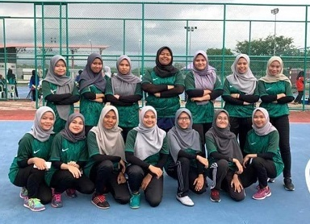
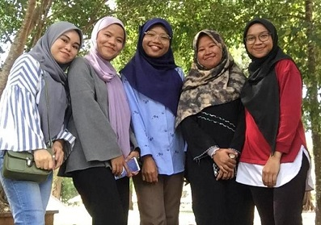
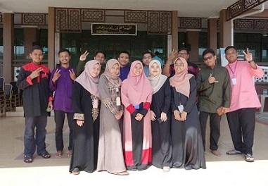

My Experience
In my life, I got a lot af experience especially during my studies at Uitm Merbok.
Igot a new friends and make a friends from many state.
I have joined a lots of interesting activities with my friends together.while in semester 2, I entered the competition organized
at my university which is the Quran recitation competition.
There, I was crowned the winner of the competition. Due to that, I received a gift in the form of ringgit from the organizers.
Apart from that, I was also taken by a friend to climb Mount Jerai. This was an experience I will never forget as it was my first time
climbing a mountain. The climb took 6 hours to reach the summit. really tiring but I am happy because not everyone can do it.
You can see my photo with my friends.
MY EXPERIENCE DURING STUDY AT UITM
- Tournamnet futsal 2019 (UITM KEDAH)
- Joining balloon run at UITM
- going to Gua Kelam
- Camping in Mount Jerai
- Handle program club
 